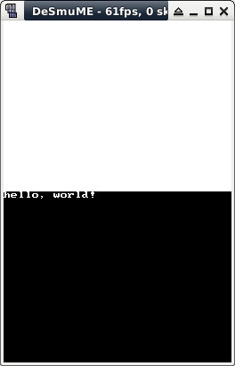

參考資訊：
https://libnds.devkitpro.org/index.html
main.c
#include <nds.h>
#include <stdio.h>
int main(void)
{
int cc = 0;
consoleDemoInit();
printf("hello, world!");
for (cc = 0; cc < 180; cc++) {
swiWaitForVBlank();
}
return 0;
}
Makefile
include $(DEVKITARM)/ds_rules all: arm-none-eabi-gcc -march=armv5te -mtune=arm946e-s -fomit-frame-pointer -ffast-math -mthumb -mthumb-interwork -I/opt/devkitpro/libnds/include -DARM9 -c main.c -o main.o arm-none-eabi-gcc -specs=ds_arm9.specs -g -mthumb -mthumb-interwork main.o -L/opt/devkitpro/libnds/lib -lnds9 -o main.elf ndstool -c main.nds -9 main.elf -b /opt/devkitpro/libnds/icon.bmp "devkitARM" clean: rm -rf main.o main.elf main.nds
編譯、執行
$ sudo docker run --rm -it -v $(pwd):/source nds-env /bin/bash
root@6c3df7e9daba:/source# make
arm-none-eabi-gcc -march=armv5te -mtune=arm946e-s -fomit-frame-pointer -ffast-math -mthumb -mthumb-interwork -I/opt/devkitpro/libnds/include -DARM9 -c main.c -o main.o
arm-none-eabi-gcc -specs=ds_arm9.specs -g -mthumb -mthumb-interwork main.o -L/opt/devkitpro/libnds/lib -lnds9 -o main.elf
ndstool -c main.nds -9 main.elf -b /opt/devkitpro/libnds/icon.bmp "devkitARM"
Nintendo DS rom tool 2.1.2 - Jun 30 2020
by Rafael Vuijk, Dave Murphy, Alexei Karpenko
root@6c3df7e9daba:/source# exit
exit
$ desmume main.nds
完成
